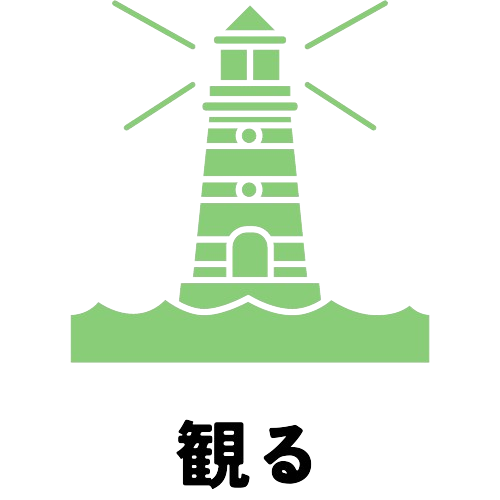
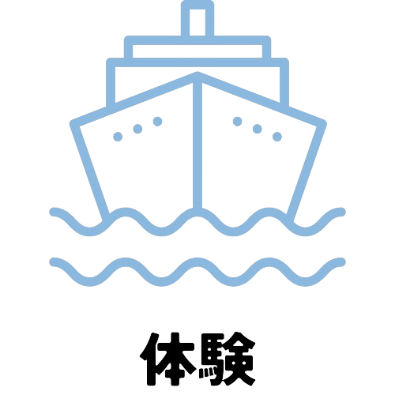
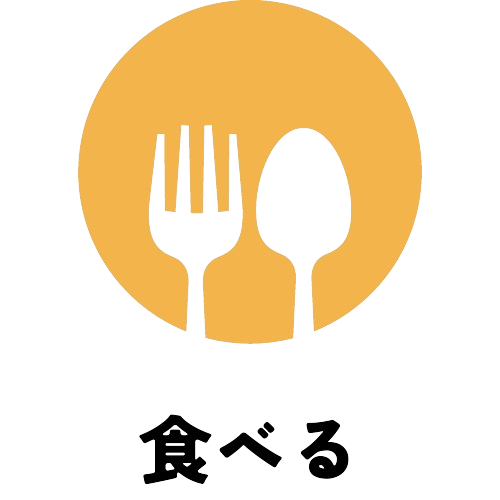
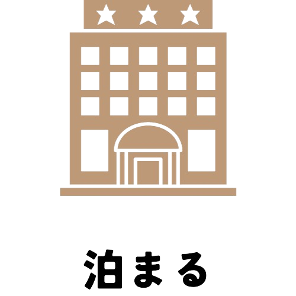
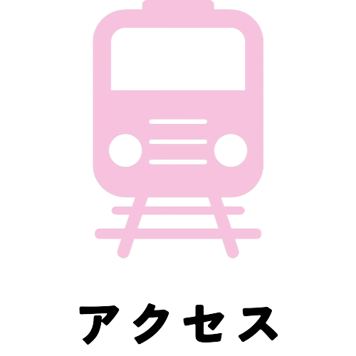
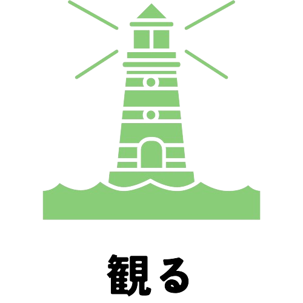
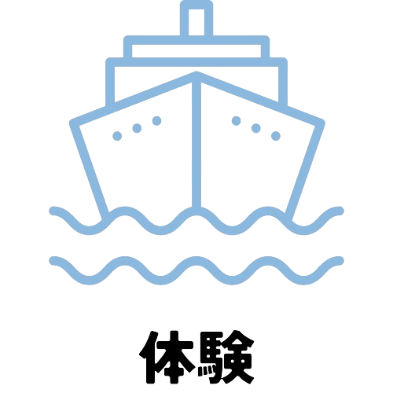
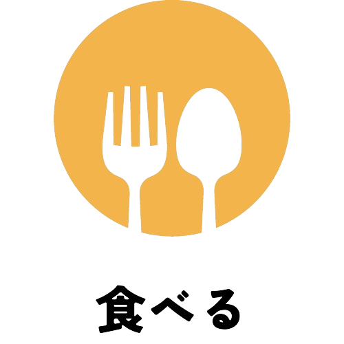
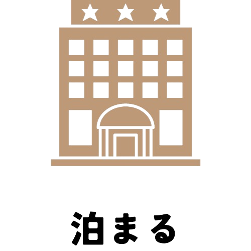
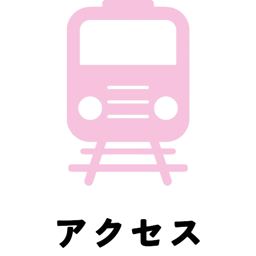

根室市は太平洋とオホーツク海に面した日本で最も東にある街。
日本一早い日の出が見られる「納沙布岬」や幻想的な流氷の景色を眺められる「根室海峡」など、魅力あふれる観光地があります。
また、根室市では水産加工業が盛んで、「花咲ガニ」や「根室のさんま」を目当てに訪れる観光客も少なくありません。旬の時期にはお祭りも開催しており、多くの地元民や観光客で賑わいます。
N E M U R O
ああああああああああああああ。
ああああああああああああああ